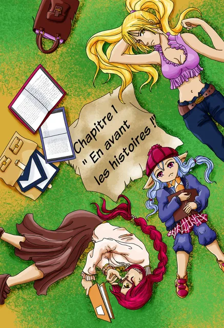
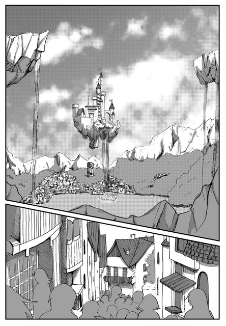
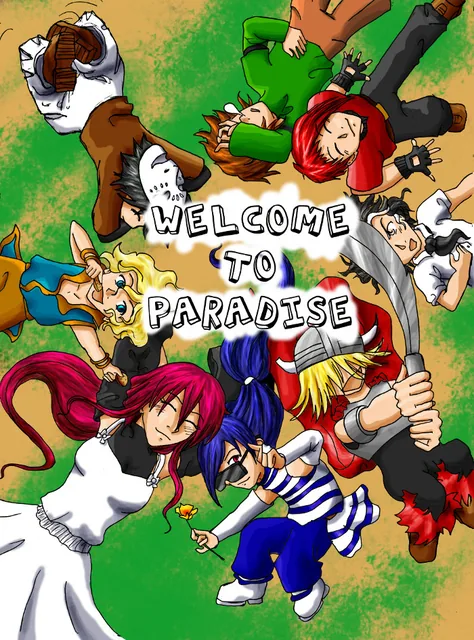
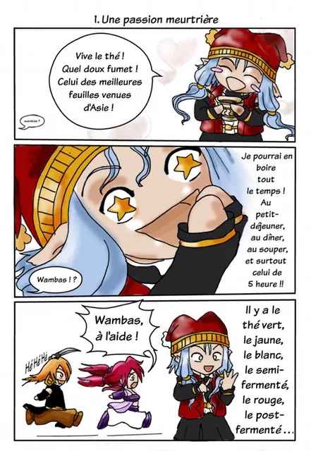

Les Contes d’Aelysse, tome 1
L’histoire principale d’Aelysse et de ses amis dans le monde d’Elenda.
Un univers de Sandrine · Haudryane
Choisissez le tome 1, les premières pages du tome 2, le hors-série ou Histoire d’en rire. Lecture gratuite des mangas de Sandrine.

L’histoire principale d’Aelysse et de ses amis dans le monde d’Elenda.

Les premières planches de la suite de l’aventure.

Une courte histoire pour découvrir les grandes lignes de cet univers.

Trois clins d’œil humoristiques aux personnages des Contes d’Aelysse.